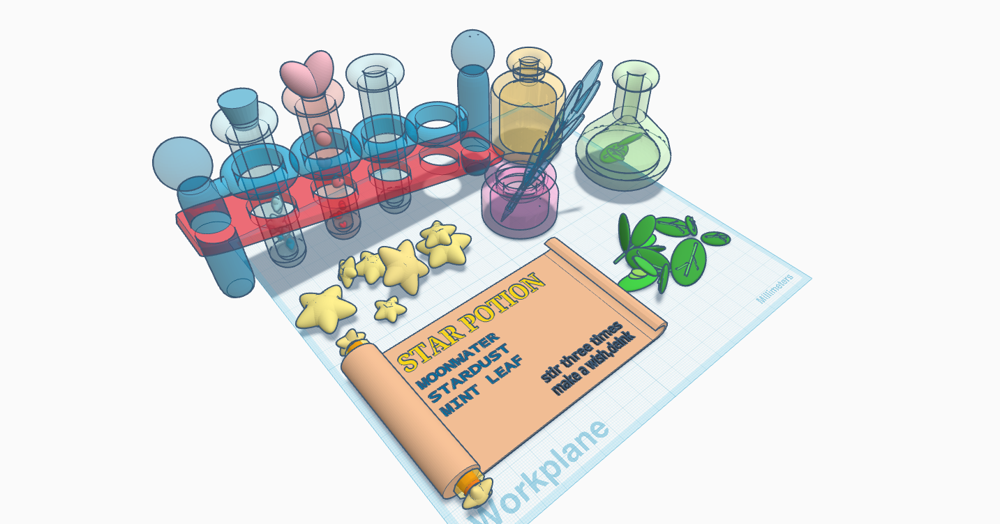
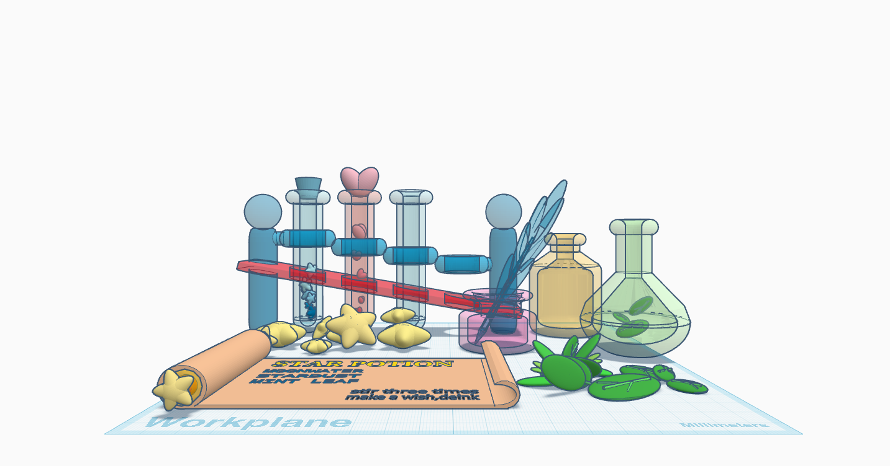
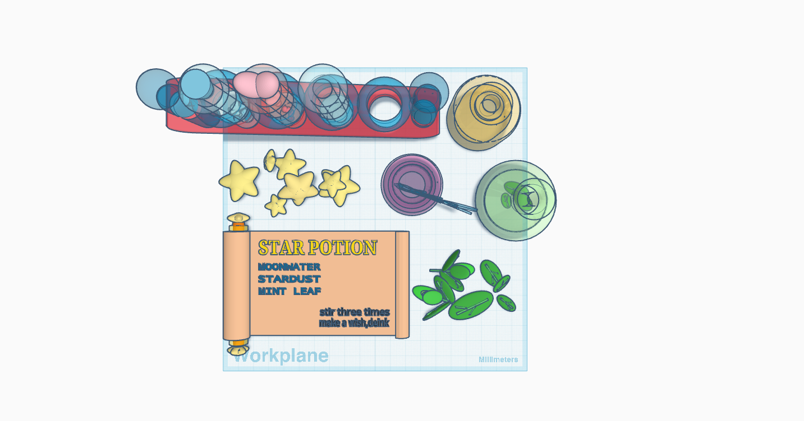
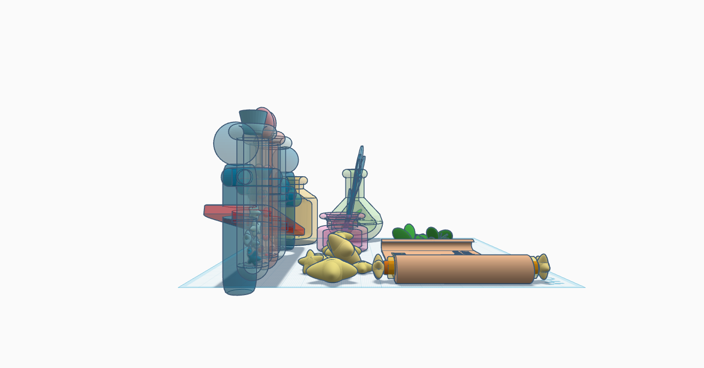

3D Project
这是一个桌面上的魔法药水制作场景，用 Tinkercad 建模。包含试管、药水瓶、配方卷轴、墨水瓶与羽毛笔，以及小星星和薄荷叶。模型设计用于图像渲染。
This is a magical potion-making scene on a desktop, modeled in Tinkercad. It includes test tubes, a potion bottle, a recipe scroll, ink and quill, as well as small stars and mint leaves. Designed for image rendering.




Used a cylinder for the test tube body, a donut-like shape for the rim, and a sphere for the bottom, then used the hole tool to hollow out the inside. Stars were made by placing five slightly curved cones around a sphere and grouping them. The most challenging part was that I couldn't adjust curves directly — I solved this by using different shapes to cut into the forms.
在 Tinkercad 中查看模型：点击这里
View the model in Tinkercad: Click here
-配方已完成 药水准备就绪-
-Recipe complete Potion ready-